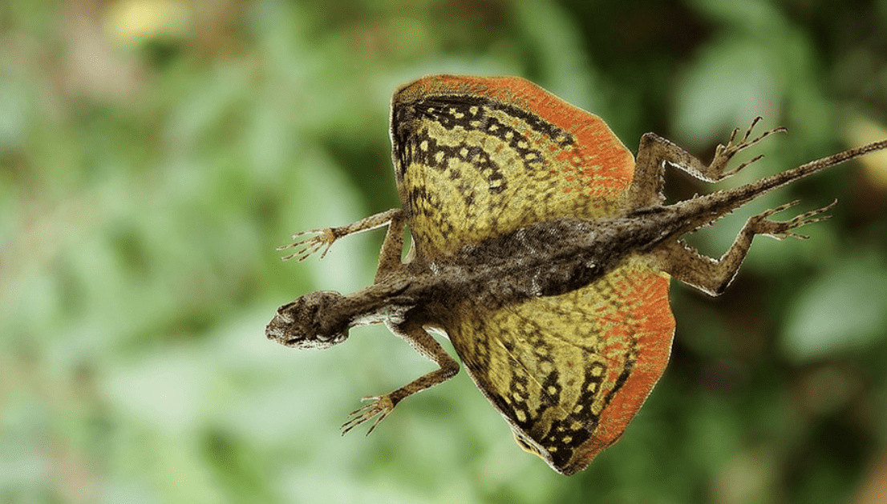

Draco Lizards are a carnivorous reptile species of flying lizards found in Southeast Asia and Southern India. While they do not actually "fly", they are able to glide using by extending their membranes to act as wings. They are typically 8 inches long with brown bodies and yellow or blue colored "wings". Their diet mainly consists of ants or other insects.